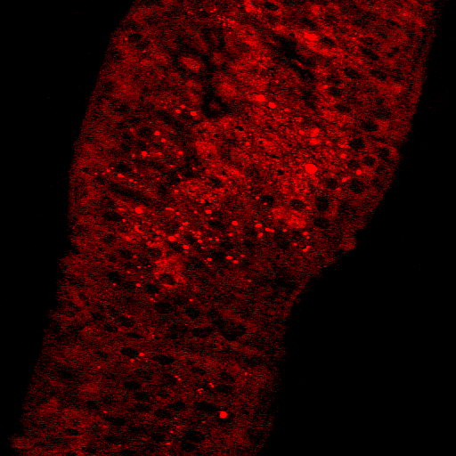

SRS
SRS, or Stimulated Raman Scattering, is an imaging technique that can generate two-dimensional chemical maps of biological tissues. Compared with spontaneous Raman spectroscopy, SRS provides a stronger spatial metabolic readout because it can visualize where specific molecular signals are distributed across tissue structures rather than measuring spectra from selected points alone. This makes SRS especially useful for future experiments that aim to connect rapamycin-associated metabolic changes with organ-level anatomy and localized lipid droplet behavior.
